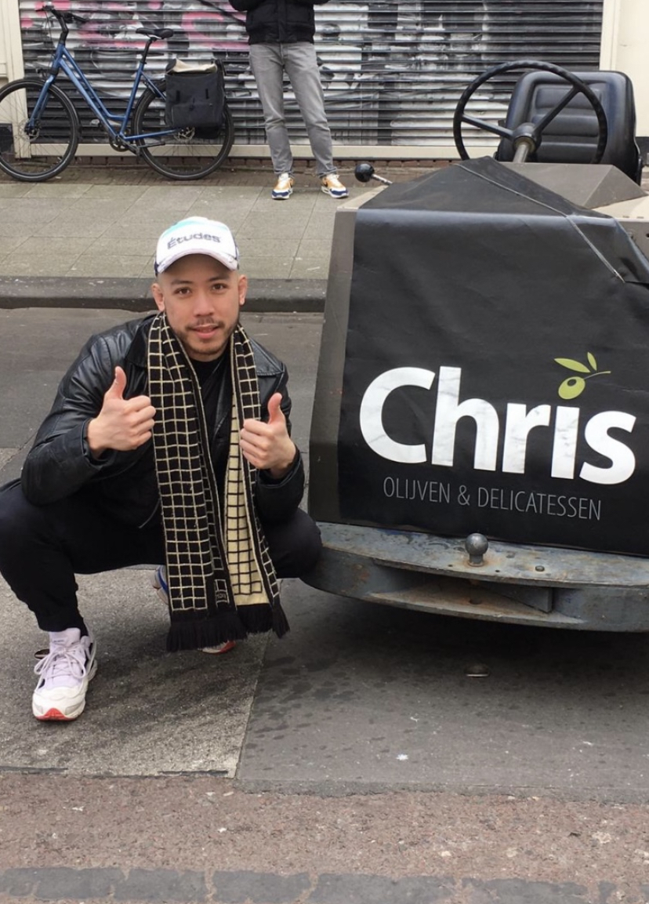

<!DOCTYPE html>
<html>
    <head>
        <link rel="shortcut icon" href="favicon.ico" type="image/x-icon">
        <link href="styles/style.css" rel="stylesheet">
    
        <link rel="preconnect" href="https://fonts.googleapis.com">
<link rel="preconnect" href="https://fonts.gstatic.com" crossorigin>
<link href="https://fonts.googleapis.com/css2?family=Sora&display=swap" rel="stylesheet">
    
        <meta charset="utf-8">
        <title>Christian Edward</title>
      </head>
<main>
<div class="header-img"></div>
<div class="header-img2"></div>
</main>
    <body>
    </body>
    <script src="scripts/main.js" type="text/javascript"></script>
    </html> 
    
    <p>

        <div id="container">
            <div id="floated">Codaisseur</div>
                    Website
        </div>

        <h1>Hello World! 🌎 My name is <span>Christian Edward</span>. I am a Graphic Designer from Dutch-Indonesian descent 🇳🇱 🇮🇩, currently residing in Amsterdam (NL), where i live with a cat and 3 other people in a canal house 🌆. I am holding a BA degree in Autonomous Design (Fine Art Dept.) at the Willem de Kooning Academy in Rotterdam (NL) where i graduated in 2016. I was born on May 4th 1987 on a Monday at 9am, which makes my zodiac sign a Taurus ♉, this unfortunately makes me incompatible with Aquarius, Leo, or Sagittarius star signs. According to my mother this is false information tough. In my free time
            i like to train Brazilian Jiu-Jitsu🥋 and MMA 🤼 🥊, like to go to Musea or Art exhibitions 🖼️, listen to (or preferably watch) podcasts🎙️, and browse the Internet 🌐 for random Youtube tutorials on a daily basis, it is one of my absolute favourite things to do🕵️‍♂️. Furthermore, i currently am following this Coding Course to upgrade my developer skills and possibly changing carreers into the wonderful world of Tech👨‍💻. Thank you for reading up until this point, i hope to one day use it as my Ted Talk.</h1>
     </p>
<h3>Follow me on LinkedIn <a href="https://www.linkedin.com/in/christianedward1/" style="color:mediumblue" target="_blank">Here</a>.</h3>
<div id="footer">
   Christian Edward 2022, All rights reserved. ©
  </div>
